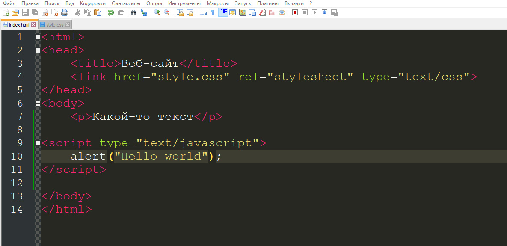

JavaScript - для начинающих

Давайте зайдем на наш сайт, с которым мы ранее работали и попробуем открыть консоль разработчика, сделать это можно нажав на клавишу F12, либо же комбинацией клавиш ctrl+shift+i. У нас справа должна открыть консоль и выглядеть она будет примерно следующим образом:
Тут нас интересует вкладка "Console" и пока что там пусто
Вернемся обратно к редактированию файла index.html и дополним его следующим кодом:
Тут мы добавили октрывающий и закрывающий тег script и между ними написали самую простую команду, которая выводит текст "Hello world" в консоль, выводимый текст должен быть обязательно между ковычками, иначе консоль вместо нужного текста выдаст ошибку. Сохраним и сново откроем сайт с консолью, если все написано правильно, то в консоли будет написано фраза "hello world" без кавычек
Можно выводить текст не только в консоль, но и на сам сайт, а если быть точнее в специальное модальное окно, делается это схожим образом, как и с выводом в консоль, сотрем старую функцию и напишем следующее:
Теперь если вернуться обратно на сайт и перезагрузить его, то нас будет встречать вот такое окно: